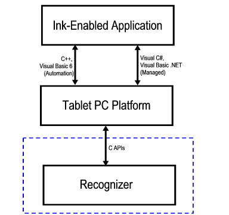

An ink-enabled application communicates with the recognition system through the Tablet PC Platform APIs. Applications use the IInkRecognizer object to accomplish this. The Tablet PC Platform interacts with your recognizer by using the C-style interfaces that are documented in this section. In the following illustration, the area inside the dashed line shows what is documented in this section.

A custom recognizer must include Recapis.h (installed by default in C:\Program Files\Microsoft Tablet PC Platform SDK\Include). Except where noted, your dynamic-link library (DLL) must export all of the API functions, even if you choose to have some of them return E_NOTIMPL.
Under no circumstances will your recognizer be called directly by an ink-enabled application. Instead, applications will call either the Automation APIs or the Managed APIs to get results from your recognizer.
Â
Â